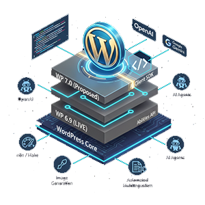

WordPress KI im Core: Abilities API & AI Client erklärt
Das Wichtigste in Kürze
Das Wichtigste in Kürze:
- Zwei Releases, ein Ziel: Die Abilities API ist seit WordPress 6.9 (Dezember 2025) im Core. Der WP AI Client SDK ist für WordPress 7.0 (April 2026) vorgeschlagen.
- Kein LLM auf deinem Server: WordPress baut keine KI ein – es baut die standardisierten Schnittstellen dazu. Die Rechenarbeit bleibt bei OpenAI, Google und Co.
- Der AI Client SDK: Entwickler greifen über die Klasse
AI_Clienteinheitlich auf Modelle wie Gemini, GPT oder Claude zu – ohne anbieterspezifischen Code. - Abilities API: Macht WordPress maschinenlesbar für externe Tools (n8n, Make) und KI-Agenten via MCP. Bereits heute in WordPress 6.9 verfügbar.

Einleitung
WordPress – das Fundament von über 40 % aller Websites weltweit – integriert KI nun direkt in das Kernsystem. Damit wird ein Großteil des bisher florierenden KI-Plugin-Marktes auf einen Schlag überflüssig. Bisher glich die KI-Nutzung in WordPress einem Flickenteppich: SEO-Texte von Plugin A, Bilder von Plugin B, Chat-Assistenz von Plugin C. Die Folge waren überladene Backends, Sicherheitsrisiken und unübersichtliche Abo-Kosten.
Das ändert sich in zwei Stufen. WordPress 6.9 (Dezember 2025) hat mit der Abilities API bereits das Agenten-Interface in den Core gebracht – das Vorgänger-Repository (Automattic/wp-feature-api) wurde archiviert, weil die Abilities API als offizielle Nachfolge-Implementierung in den WordPress Core übernommen wurde. Mit dem geplanten Release von WordPress 7.0 (April 2026) soll der WP AI Client SDK folgen – die standardisierte PHP-Abstraktionsschicht zu Sprachmodellen. Zusammen bilden sie das Fundament für native KI-Automatisierung direkt in WordPress.
Dieser Artikel basiert auf den offiziellen Dokumenten des WordPress AI Teams (make.wordpress.org/ai) und dem Abilities API GitHub Repository. Die Abilities API ist seit WordPress 6.9 stabil im Core. Der WP AI Client SDK ist offiziell als „proposed to go into WordPress 7.0" markiert – API-Namen und der finale Lieferzeitpunkt können sich bis zum Release noch ändern. Stand: Februar 2026.
Für Anwender: Was WP 6.9 und 7.0 out-of-the-box können
Das Dashboard bleibt vertraut, wird aber deutlich mächtiger. Anstatt zwischen ChatGPT, Midjourney und WordPress hin- und herzuspringen, soll die gesamte Content-Erstellung direkt in deinem Editor stattfinden. Voraussetzung: Ein API-Key bei einem KI-Anbieter deiner Wahl.
Die neuen Core-Funktionen machen Content-Marketing deutlich effizienter:
- Native Textgenerierung & Überarbeitung
- Im Gutenberg-Editor soll ein KI-Assistent als Standard-Werkzeug verfügbar werden. Du markierst einen Textabschnitt und gibst einen Befehl: „Mache diesen Absatz kürzer und prägnanter" oder lässt dir aus Stichpunkten einen fertigen Artikel entwerfen. Das System nutzt den API-Key, den du zentral in den Einstellungen unter „KI-Zugangsdaten" hinterlegt hast. Eine erste funktionierende Umsetzung – die Titelgenerierung für Beiträge – ist bereits im offiziellen AI Experiments Plugin verfügbar.
- Bildgenerierung direkt in der Mediathek
- Bildgenerierung ist als geplante Ability für das AI Experiments Plugin v0.2.0 gelistet. Das Prinzip: Du öffnest die Mediathek, wählst „Generieren" und tippst einen Prompt. WordPress ruft den konfigurierten Bildanbieter (z.B. DALL-E oder Imagen) ab, speichert das Ergebnis physisch auf deinem Server und soll automatisch Alt-Texte für SEO hinzufügen.
- Automatisierte Mehrsprachigkeit
- Die KI-Integration im Core öffnet den Weg für Übersetzungs-Workflows direkt im Editor. Ein Plugin, das die Abilities API nutzt, kann Beiträge kontextbewusst übersetzen – wobei Layout und Blöcke erhalten bleiben. Im Gegensatz zu klassischen Übersetzungs-Plugins versteht ein LLM den inhaltlichen Kontext der Seite.
Unter der Haube für Entwickler: Abilities API (6.9) & AI Client SDK (7.0)
WordPress führt in zwei Releases zwei fundamentale Schnittstellen ein. Die Abilities API ist seit WordPress 6.9 im Core und macht WordPress maschinenlesbar für autonome Agenten. Der WP AI Client SDK – für WordPress 7.0 vorgeschlagen – standardisiert den Zugriff auf externe Sprachmodelle als PHP-Abstraktionsschicht.
Wie steuert man diese Features programmatisch an? Hier sind die technischen Säulen:
1. Der WP AI Client SDK (AI_Client) – vorgeschlagen für WP 7.0
Bisher musstest du für OpenAI, Google Gemini oder Anthropic eigene HTTP-Requests schreiben oder dich auf anbieterspezifische Plugin-Abstraktionen verlassen. Der WP AI Client SDK bringt eine standardisierte Klasse mit, die heute bereits via Composer verfügbar ist und für den WordPress 7.0 Core vorgeschlagen wird. Hinweis: Laut den AI-Contributor-Meetings vom Februar 2026 gibt es die Möglichkeit, dass der SDK bei Bedarf auf WordPress 7.1 verschoben wird, falls weitere Iterationszeit nötig ist. Der aktuelle Stand zeigt aber eine klare Absicht, den SDK in 7.0 auszuliefern.
- Installation (bereits heute):
composer require wordpress/wp-ai-client - Vendor-Lock-in beendet: Du schreibst deinen Code einmal. Der Seitenbetreiber entscheidet in den Backend-Einstellungen unter „KI-Zugangsdaten", welcher Anbieter und welches Modell genutzt werden soll. Dein Plugin-Code muss sich darum nicht kümmern.
-
Einfaches Beispiel:
use WordPress\AI_Client\AI_Client; // Einfacher Text-Prompt – Modell wird automatisch gewählt $text = AI_Client::prompt( 'Schreibe eine kurze Einleitung über WordPress.' ) ->generate_text(); -
Erweitertes Beispiel mit Optionen:
use WordPress\AI_Client\AI_Client; $text = AI_Client::prompt( 'Optimiere diesen SEO-Titel.' ) ->using_system_instruction( 'Du bist ein erfahrener SEO-Redakteur.' ) ->using_temperature( 0.5 ) ->generate_text(); -
Vor dem Aufrufen prüfen, ob ein passendes Modell verfügbar ist:
use WordPress\AI_Client\AI_Client; $prompt = AI_Client::prompt( 'Analysiere diesen Text auf Lesbarkeit.' ); if ( $prompt->is_supported_for_text_generation() ) { $result = $prompt->generate_text(); } else { // Fallback: Feature ausblenden oder Hinweis anzeigen }
Der SDK nutzt intern die WordPress HTTP API (wp_remote_request()) – kein anbieterspezifischer cURL-Code nötig. Unter der Haube basiert er auf dem plattformunabhängigen PHP AI Client, der gemeinsam mit der PHP-Community entwickelt wird.
2. Die Abilities API – bereits in WordPress 6.9
Das ist der wahre Gamechanger für Automatisierung – und er ist bereits verfügbar. Die Abilities API (seit WordPress 6.9 im Core) definiert, was dein WordPress tun kann, und teilt dies der Außenwelt maschinenlesbar mit. Sie bringt ein neues funktionales Primitiv in WordPress: eine standardisierte und entdeckbare Art, wie Plugins ihre Funktionen anbieten. Wichtig: In WordPress 6.9 wurde nur die serverseitige (PHP) Implementierung ausgeliefert. Mit WordPress 7.0 kommt zusätzlich die Client-Side Abilities API, die Abilities auch im Browser standardisiert registrieren und ausführen kann – für noch reichere Workflows direkt im Editor.
-
Ability registrieren:
wp_register_ability( 'mein-plugin/erstelle-entwurf', array( 'label' => 'Beitragsentwurf erstellen', 'category' => 'content', 'permission_callback' => function() { return current_user_can( 'edit_posts' ); }, 'execute_callback' => 'mein_plugin_erstelle_entwurf_callback', 'input_schema' => array( 'type' => 'object', 'properties' => array( 'titel' => array( 'type' => 'string' ), 'inhalt' => array( 'type' => 'string' ), ), ), ) ); - Function Calling ready: Abilities haben ein definiertes Input- und Output-Schema im JSON-Format. Ein KI-Modell kann diese Abilities als Werkzeuge (Function Calls) nutzen – die KI weiß dadurch, was sie in WordPress tun kann.
- MCP-Integration: Über den MCP Adapter werden registrierte Abilities direkt für externe KI-Assistenten (wie Claude oder ChatGPT) als Tools verfügbar – mit einem einzigen Meta-Parameter:
wp_register_ability( 'mein-plugin/meine-ability', array( // ... 'meta' => array( 'mcp' => array( 'public' => true, // Pflicht für MCP-Zugriff ), ), ) ); - Headless & Automatisierung: Externe Tools wie n8n, Make oder autonome KI-Agenten können die REST API abfragen, sehen die verfügbaren Abilities und können selbstständig Beiträge erstellen, übersetzen oder veröffentlichen.
3. Bildgenerierung als geplante Ability
Auch Bildgenerierung soll als registrierte Ability verfügbar werden. Die Roadmap des AI Experiments Plugins listet Bildgenerierung für Version 0.2.0. Das Prinzip folgt dem generellen Abilities-Muster: Eine registrierte Ability nimmt einen Prompt und eine gewünschte Bildgröße als Input entgegen, ruft den konfigurierten Bildanbieter auf und gibt die attachment_id des gespeicherten Bildes zurück.
- Das Bild wird physisch auf deinem Server gespeichert – kein externer Hosting-Dienst nötig.
- Der exakte Endpunkt und die finale API-Signatur werden mit dem offiziellen Release dokumentiert. Verlasse dich für produktiven Code nicht auf inoffizielle Vorschaupfade.
- Perfekt für automatisierte Workflows: Ein n8n-Agent kann Beitragstext generieren und ein passendes Titelbild erstellen lassen – alles über standardisierte Abilities-Endpunkte.
Wird WordPress zur Insellösung?
Wenn WordPress KI „in den Core baut", klingt das für manche nach dem nächsten aufgeblähten Monolithen. Tatsächlich ist das Gegenteil der Fall.
WordPress baut keine KI in den Core ein – es läuft kein Sprachmodell auf deinem Server. WordPress baut lediglich die Schnittstellen (APIs) in den Core ein. WordPress wird dadurch weniger zur Insel, sondern vielmehr zu einem standardisierten Router.
- Bisher – Das Insel-Problem
- Wenn du 5 verschiedene KI-Plugins nutzt, bringt jedes seinen eigenen Code, seinen eigenen API-Client und seine eigene Datenbankstruktur mit. Jedes Plugin kocht sein eigenes Süppchen – ohne gemeinsamen Standard. Das Ergebnis: inkonsistente Fehlerbehandlung, mehrfache API-Keys, aufgeblähte Datenbank.
- Neu – Der Hub-Ansatz
- WordPress standardisiert nur den „Postboten" (den AI Client). Es sagt: „Egal, wer von außen mit mir reden will (n8n, KI-Agenten via MCP) oder mit wem ich nach außen reden soll (OpenAI, Gemini, Anthropic) – wir nutzen alle dieselbe genormte Tür." Die eigentliche Rechenarbeit – das Durchrechnen neuronaler Netze, das Generieren von Bildern – passiert vollständig auf den Servern der KI-Anbieter.
Belastet das PHP und den Server?
Hier muss man zwischen zwei grundlegend verschiedenen Problemen unterscheiden, denn die Antworten fallen gegensätzlich aus.
- CPU/RAM-Auslastung – Entwarnung
- PHP wird durch KI-Aufrufe nicht stark belastet. PHP rechnet keine neuronalen Netze durch und rendert keine Bilder. Es sendet lediglich einen HTTP-Request: Ein paar Kilobyte Prompt-Text gehen raus, eine Textantwort oder eine Bild-URL kommen zurück. Für PHP ist das kaum anstrengender als das Abrufen eines RSS-Feeds. Der WP AI Client SDK nutzt intern
wp_remote_request()– die gleiche WordPress-HTTP-API, die auch für externe REST-Aufrufe genutzt wird. - PHP-Timeouts – Die echte Herausforderung
- Hier liegt die eigentliche technische Herausforderung. PHP arbeitet synchron: Wenn du auf „Bild generieren" klickst und der Anbieter 15 Sekunden braucht, bleibt der PHP-Worker in dieser Zeit offen und wartet. Machen das 50 Redakteure gleichzeitig, sind alle PHP-Worker blockiert – die Website bricht zusammen (Error 504 Gateway Timeout).
Vergleich: Content-Erstellung im Wandel
Der Unterschied zwischen dem bisherigen Plugin-Chaos und der nativen Core-Integration zeigt, warum dieses Update so bedeutend ist. Beachte dabei die zeitliche Staffelung: Die Abilities API ist bereits heute in WordPress 6.9 verfügbar, der AI Client SDK kommt mit 7.0.
| Bisher (WP 6.8 und älter) | WordPress 6.9 / 7.0 |
|---|---|
| Teure Drittanbieter-Plugins für KI nötig | Nativer AI Client SDK (7.0), du zahlst nur die reinen API-Kosten direkt beim Anbieter |
| Jedes Plugin verwaltet eigene API-Keys separat | Zentrale Einstellung „KI-Zugangsdaten" im Core versorgt das gesamte System |
| Bilder müssen extern generiert und manuell hochgeladen werden | Bildgenerierung als geplante Ability direkt in die WordPress-Mediathek (Roadmap 7.0) |
| Automatisierung erfordert individuelle REST-Hacks pro Plugin | Abilities API (6.9, bereits im Core) bietet standardisierte Schnittstellen für KI-Agenten, n8n und MCP |
| Kein gemeinsamer Standard: Jedes Plugin definiert seine eigene Public API anders | Abilities sind selbst-dokumentierende, entdeckbare Einheiten mit einheitlichem Input/Output-Schema |
Häufig gestellte Fragen
Brauche ich mit WordPress 6.9 / 7.0 noch externe KI-Plugins?
Die Infrastruktur zieht in den Core ein, aber du benötigst weiterhin einen Zugang zu den KI-Modellen selbst – also einen API-Key von OpenAI, Anthropic, Google oder einem anderen Anbieter. Du zahlst direkt für das, was du verbrauchst (Pay-per-Use), sparst dir aber Plugin-Abonnements und profitierst von einer einheitlichen Konfiguration für alle KI-Features auf deiner Website.
Läuft mit WordPress 7.0 ein KI-Modell auf meinem Server?
Nein. Das ist ein häufiges Missverständnis. WordPress baut keine KI in den Core ein – es baut die standardisierten Schnittstellen dazu. Dein Server sendet lediglich HTTP-Requests an externe KI-Anbieter (OpenAI, Google, Anthropic). Die eigentliche KI-Rechenarbeit findet auf deren Servern statt. Für deinen Server ist ein KI-Aufruf technisch kaum belastender als das Abrufen eines RSS-Feeds.
Kann WordPress jetzt von ganz alleine bloggen?
Ja, in Kombination mit Automatisierungstools. Die Abilities API (seit WP 6.9 im Core) macht WordPress maschinenlesbar. Du kannst Workflows einrichten, bei denen ein externes Skript (z.B. n8n) aktuelle Daten abruft und WordPress über registrierte Abilities den Befehl gibt, einen Beitragsentwurf zu erstellen. Über den MCP Adapter können KI-Assistenten wie Claude oder ChatGPT direkt mit WordPress interagieren. Wichtig: Der permission_callback deiner Abilities muss sicherstellen, dass solche Automatisierungen nur mit korrekter Authentifizierung möglich sind.
Was passiert mit meinen alten KI-Plugins?
Gute Plugin-Entwickler werden ihre Architektur anpassen: Statt eigener HTTP-Clients nutzen sie den nativen AI_Client SDK, statt proprietärer APIs registrieren sie Abilities. Das macht ihre Plugins schlanker und interoperabler. Reine „Wrapper"-Plugins, die nur eine ChatGPT-Schnittstelle in den Editor brachten, werden durch die nativen Funktionen strukturell überflüssig.
Werden die KI-Bilder in der Mediathek gespeichert?
Ja. Bildgenerierung ist als Ability geplant. Generierte Bilder sollen direkt in der WordPress-Mediathek gespeichert werden, inklusive automatisch generierter Alt-Texte. Das Bild wird physisch auf deinem Server gehostet – kein externer Hosting-Dienst nötig.
Wem gehören die generierten Bilder und Texte?
Generierte Bilder sollen physisch in deiner Mediathek (/wp-content/uploads/) gespeichert werden – du hostest sie selbst. Die Nutzungsrechte hängen vom jeweiligen Anbieter ab, dessen API-Key du konfiguriert hast. Prüfe die Nutzungsbedingungen des gewählten Anbieters (z.B. OpenAI, Google, Anthropic), da diese sich unterscheiden und für kommerzielle Nutzung relevant sind.
Ist das DSGVO-konform für europäische Websites?
Das ist ein kritischer Punkt für EU-Betreiber. Da alle Prompts und Inhalte an externe US-amerikanische Anbieter (OpenAI, Google, Anthropic) gesendet werden, müssen die üblichen Anforderungen für Drittlandübermittlungen erfüllt sein: Verarbeitungsverträge (DPA) mit den Anbietern, Prüfung der Standardvertragsklauseln sowie transparente Information der Nutzer, falls deren Inhalte in Prompts einfließen. WordPress stellt die Infrastruktur bereit – die datenschutzrechtliche Verantwortung liegt beim Seitenbetreiber.
Fazit: Infrastruktur für die nächste Generation
WordPress löst das Versprechen ein, KI nicht als Spielerei, sondern als echte Infrastruktur zu integrieren. Die Abilities API (WP 6.9) und der WP AI Client SDK (WP 7.0, vorgeschlagen) sind keine Features – sie sind ein neues architektonisches Fundament. WordPress wird vom Werkzeug zum Router: Wer sendet was an wen, und wer darf was tun?
Zusammenfassung:
- Abilities API (WP 6.9): Serverseitig bereits im Core. Macht WordPress-Funktionen maschinenlesbar und entdeckbar für KI-Agenten, MCP-Clients und Automatisierungstools. WordPress 7.0 ergänzt die Client-Side Abilities API für Browser-basierte Workflows.
- WP AI Client SDK (WP 7.0, vorgeschlagen): Standardisierter PHP-Zugang zu allen großen KI-Anbietern über eine einheitliche Klasse – ohne Vendor-Lock-in. Laut AI-Contributor-Meetings ist ein Aufschub auf 7.1 möglich, falls mehr Iterationszeit nötig ist.
- Kein LLM auf dem Server: WordPress ist der Router, die KI-Rechenarbeit bleibt bei den Anbietern.
- Sicherheit & DSGVO nicht vergessen:
permission_callbackist Pflicht. Drittlandübermittlungen müssen rechtlich abgesichert sein.
Nutzt du aktuell schon Automatisierungs-Tools wie n8n oder Make in Kombination mit WordPress? Die Abilities API ist heute verfügbar – der richtige Zeitpunkt, um erste Workflows damit aufzubauen und auf den nativen Standard umzustellen, bevor WP 7.0 erscheint.
Brauchst du Hilfe bei der KI-Automatisierung?
Die neuen APIs bieten enormes Potential – aber die richtige Implementierung für dein spezifisches Projekt braucht Erfahrung. Du möchtest erste Workflows mit der Abilities API aufbauen, deinen Content-Prozess automatisieren oder dein eigenes Plugin fit für den nativen AI Client SDK machen? Lass uns konkret besprechen, was für dein Setup sinnvoll ist.